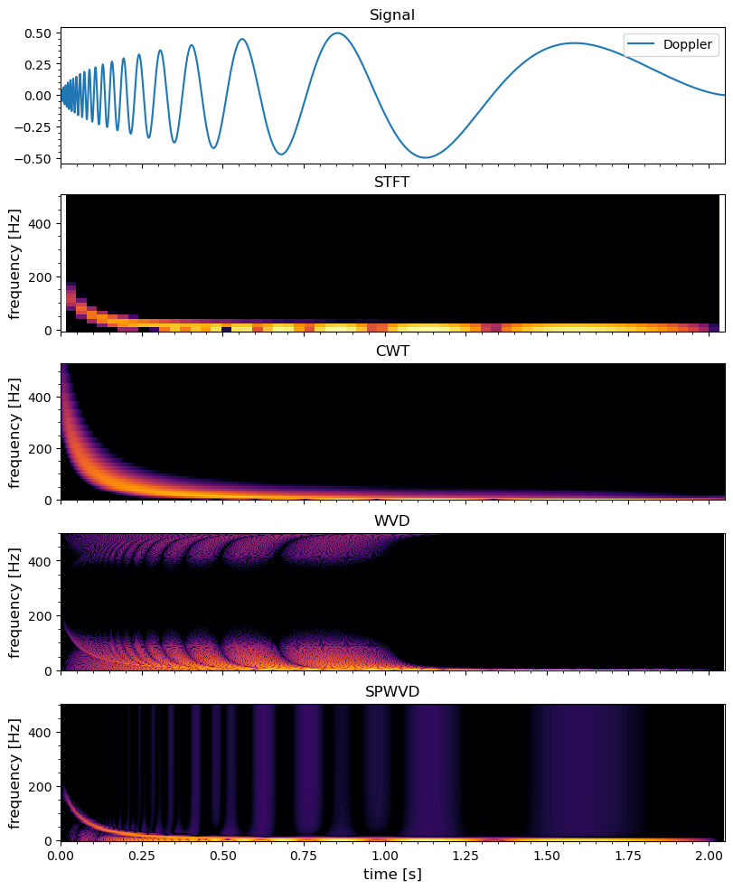

Comparison of Time-Frequency Transforms
Stefan Scholl made a nice comparison between different kinds of time-frequency transforms available: Fourier, Gabor, Morlet or Wigner. The paper on Arxiv is linked here. In this post, we try to recap the most important parts and attach some examples with codes.
| Transform | Time-Frequency Resolution | Artifacts | Application |
|---|---|---|---|
| Short-Time Fourier (STFT) / Gabor | poor | no | general purpose |
| Continuous Wavelet (CWT) | poor, frequency dependent | no | when variable time-frequency resolution required, e.g. audio |
| Stockwell (S) | poor, frequency dependent | no | when variable time-frequency resolution with a fixed phase alignment required, emphasizes higher frequencies |
| Smoothed Pseudo Wigner-Ville (SPWVD) | good | sometimes | general purpose, when high resolution required and some artifacts can be tolerated |
| Wigner-Ville (WVD) | excellent | strong | for simple signals or when artifacts can be tolerated |
Short-Time Fourier and Gabor Transform
Wigner-Ville Distribution
The Wigner-Ville distribution (WVD) overcomes the limited resolution of the Fourier and wavelet based methods using an autocorrelation approach.
The standard version of the autocorrelation function (ACF) considers the pointwise multiplication of a signal with a lagged version of itself and integrates the results over time. It is defined as \[ r_{xx}(\tau) = \int_{-\infty}^{\infty}x(t)x^\ast(t+\tau)\mathrm{d}t \]
The standard ACF is only dependent on the lag \(\tau\), because time is integrated out of the result. The WVD uses a variation of the ACF, called the instantaneous autocorrelation, which omits the integration step. Thus time remains in the result. The instantaneous autocorrelation is therefore a two dimensional function, depending on \(t\) and the lag \(\tau\): \[ R_{xx}(t, \tau) = x(t+\frac{\tau}{2})x^\ast(t-\frac{\tau}{2}) \]
The WVD calculates the frequency content for each time step t by taking a Fourier transform of the instantaneous autocorrelation across the axis of the lag variable \(\tau\) for that given t \[ \begin{aligned} W(t,f) &= \int_{-\infty}^{\infty} R_{xx}(t,\tau)e^{-2\pi\,i\,\tau}\mathrm{d}\tau \\ &= \int_{-\infty}^{\infty} x(t+\frac{\tau}{2})x^\ast(t-\frac{\tau}{2})e^{-2\pi\,i\,\tau}\mathrm{d}\tau \end{aligned} \]
The result is real-valued. This way of calculation is related to the fact, that the Fourier spectrum of a signal equals the Fourier transform of its ACF. The WVD offers very high resolution in both time and frequency, this is much finer than of the STFT.
An important disadvantage of the WVD are the so-called cross terms. These are artifacts occurring in the result, if the input signal contains a mixture of several signal components. They stem from the fact, that the WVD is a quadratic (and therefore a non-linear) transform due to the way the instantaneous autocorrelation is calculated. The WVD of the superposition of two signals is \[ W_{x_1 + x_2} = W_{x_1} + W_{x_2} + 2\mathcal{R}\{ W_{x_1,x_2} \} \] and may be dominated by the cross term \(W_{x_1,x_2}\), which may have twice the amplitude of the auto terms \(W_{x_1}\) and \(W_{x_2}\). Unfortunately, the occurrence of these cross terms limits the usefulness for many practical signals.
The cross terms occur midway between the auto terms and often have an oscillatory (high-frequency) pattern. A method to reduce cross terms is to suppress the oscillating components by additional low-pass filtering in time and frequency. However, this suppression of cross terms comes at the expense of reduced resolution. This idea of additional cross term suppression leads to the more general formulation of time-frequency transforms called Cohen’s class. From Cohen’s class many different variants can be deduced, that basically differ in the way the low-pass filter is designed. A prominent one is the smoothed pseudo Wigner-Ville distribution (SPWVD). Other variants such as Choi-Williams, Margenau-Hill or Rihaczek can be found in literature, but often provide very similar results to the SPWVD for practical signals. The SPWVD is defined as the WVD filtered by two separate kernels \(g(t)\) and \(H(f)\) (need to be chosen prior to the transform), that smooth the WVD in frequency and time: \[ \mathrm{SPWVD}(t,f) = \int_{t_1}\int_{f_1} g(t-t_1)H(f-f_1)W(t_1,f_1)\mathrm{d}t_1\mathrm{d}f_1 \]
Here is the code for comparing the different method using an analytical Doppler signal:
using SignalAnalysis
using SignalAnalysis.Units: kHz, s
using ContinuousWavelets
using DSP: pow2db
using Wavelets: testfunction
using PyPlot
n = 2048
fs = 1000.
t = range(0, n / fs, length=n) # 1kHz sampling rate
f = testfunction(n, "Doppler")
x = signal(f, fs)
fig, axs = plt.subplots(5,1; figsize=(8,10), constrained_layout=true, sharex=true)
axs[1].plot(t, x, label="Doppler")
# STFT
y = tfd(x, Spectrogram(nfft=2^6, noverlap=2^5, window=hamming))
vmin, vmax = extrema(y.power)
if vmax / vmin > 1e4
vmin = vmax / 1e4
end
axs[2].pcolormesh(y.time, y.freq, y.power;
norm=matplotlib.colors.LogNorm(;vmin, vmax),
cmap=matplotlib.cm.inferno)
c = wavelet(Morlet(π), β=2)
res = ContinuousWavelets.cwt(x, c)
res = abs.(res.^2)
freqs = getMeanFreq(ContinuousWavelets.computeWavelets(size(res,1), c)[1])
freqs[1] = 0
vmax = maximum(res)
vmin = vmax / 1e4
axs[3].pcolormesh(t, freqs, res';
norm=matplotlib.colors.LogNorm(;vmin, vmax),
cmap=matplotlib.cm.inferno)
# WVD
y = tfd(x, Wigner())
@. y.power = abs(y.power)
vmax = maximum(y.power)
vmin = vmax / 1e4
axs[4].pcolormesh(y.time, y.freq, y.power;
norm=matplotlib.colors.LogNorm(;vmin, vmax),
cmap=matplotlib.cm.inferno)
# SPWVD
y = tfd(x, Wigner(nfft=2^8, smooth=10, method=:CM1980, window=hamming))
@. y.power = abs(y.power)
#[y.power[i] = eps() for i in eachindex(y.power) if y.power[i] == 0]
vmax = maximum(y.power)
vmin = vmax / 1e4
axs[5].pcolormesh(y.time, y.freq, y.power;
norm=matplotlib.colors.LogNorm(;vmin, vmax),
cmap=matplotlib.cm.inferno)
titles = ("Signal", "STFT", "CWT", "WVD", "SPWVD")
ylabels = ("frequency [Hz]", "frequency [Hz]", "frequency [Hz]", "frequency [Hz]")
for (i, ax) in enumerate(axs)
ax.set_title(titles[i], fontsize="large")
i != 1 && ax.set_ylabel(ylabels[i-1], fontsize="large")
i == 1 && ax.legend(loc="upper right")
ax.xaxis.set_minor_locator(matplotlib.ticker.AutoMinorLocator())
ax.yaxis.set_minor_locator(matplotlib.ticker.AutoMinorLocator())
end
axs[end].set_xlabel("time [s]", fontsize="large")
Notes:
- Many plot recipes automatically convert power to decibel. In MATLAB/Julia DSP, this is done via
pow2db. However in many scientific domains people prefer powers, which is shown in the code above. - The choice of colormap range usually requires some tweaks. Practically we can first choose the maximum value and let the minimum value be a function of the maximum so as to avoid extremely large scale differences and highlight the peaks.
- The continuous wavelet transform package in Julia is not mature. Many parameters in SignalAnalysis.jl are not documented.